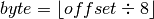
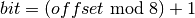
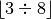
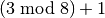
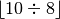
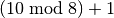

GETBIT 命令的实现¶
GETBIT 命令用于返回位数组 bitarray 在 offset 偏移量上的二进制位的值：
GETBIT <bitarray> <offset>
GETBIT 命令的执行过程如下：
- 计算  ，
byte值记录了offset偏移量指定的二进制位保存在位数组的哪个字节。 - 计算  ，
bit值记录了offset偏移量指定的二进制位是byte字节的第几个二进制位。 - 根据
byte值和bit值， 在位数组bitarray中定位offset偏移量指定的二进制位， 并返回这个位的值。
举个例子， 对于图 IMAGE_BIT_EXAMPLE 所示的位数组来说， 命令：
GETBIT <bitarray> 3
将执行以下操作：
-  的值为
0。 -  的值为
4。 - 定位到
buf[0]字节上面， 然后取出该字节上的第4个二进制位（从左向右数）的值。 - 向客户端返回二进制位的值
1。
命令的执行过程如图 IMAGE_SEARCH_EXAMPLE 所示。
![digraph {
label = "\n 图 IMAGE_SEARCH_EXAMPLE 查找并返回 offset 为 3 的二进制位的过程";
//
rankdir = LR;
point_to_buf0 [label = "1) 定位到 buf[0] 字节", shape = plaintext];
point_to_idx3 [label = "2) 返回第 4 个二进制位的值", shape = plaintext];
buf [label = " { <buf0> buf[0] | 1 | 0 | 1 | <idx3> 1 | 0 | 0 | 1 | 0 } | { buf[1] （空字符） } ", shape = record];
//
edge [style = dashed];
point_to_buf0 -> buf:buf0;
point_to_idx3 -> buf:idx3;
}](../../_images/graphviz-256acae00fd4e606f350ac1d163a7f5b252d03d3.png)
再举一个例子， 对于图 IMAGE_ANOTHER_BIT_EXAMPLE 所示的位数组来说， 命令：
GETBIT <bitarray> 10
将执行以下操作：
-  的值为
1。 -  的值为
3。 - 定位到
buf[1]字节上面， 然后取出该字节上的第3个二进制位的值。 - 向客户端返回二进制位的值
0。
命令的执行过程如图 IMAGE_ANOTHER_SEARCH_EXAMPLE 所示。
![digraph {
label = "\n 图 IMAGE_ANOTHER_SEARCH_EXAMPLE 查找并返回 offset 为 10 的二进制位的过程";
rankdir = LR;
//
node [shape = record];
buf [label = " { buf[0] | 1 | 0 | 1 | 0 | 0 | 1 | 0 | 1 } | { <buf1> buf[1] | 1 | 1 | <bit> 0 | 0 | 0 | 0 | 1 | 1 } | { buf[2] | 0 | 0 | 0 | 0 | 1 | 1 | 1 | 1 } | { buf[3] | 0 | 0 | 0 | 0 | 0 | 0 | 0 | 0 } "];
node [shape = plaintext];
point_to_buf [label = "1） 定位到 buf[1] 字节"];
point_to_bit [label = "2） 返回第 3 个二进制位的值"];
//
edge [style = dashed];
point_to_buf -> buf:buf1;
point_to_bit -> buf:bit;
}](../../_images/graphviz-63fcd4bcb8aa5628bd8a7f00b302e2ae72373eea.png)
因为 GETBIT 命令执行的所有操作都可以在常数时间内完成，
所以该命令的算法复杂度为  。
。